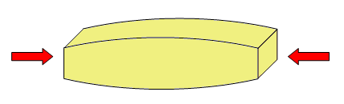
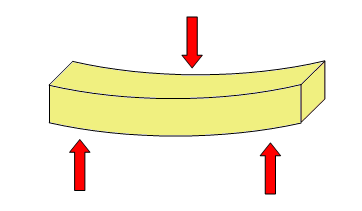
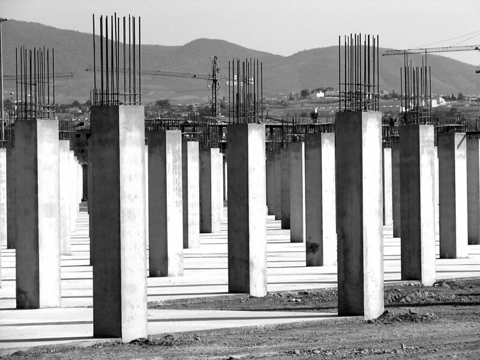
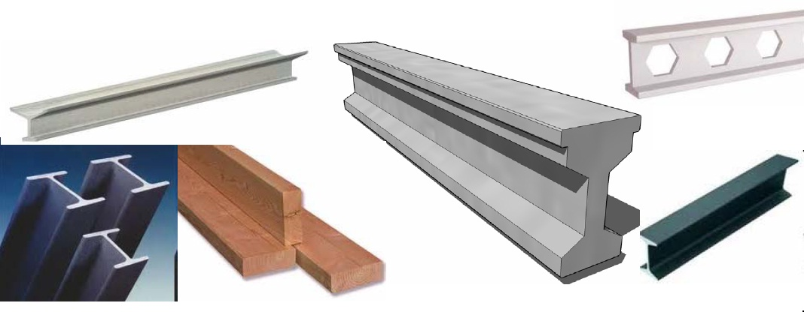
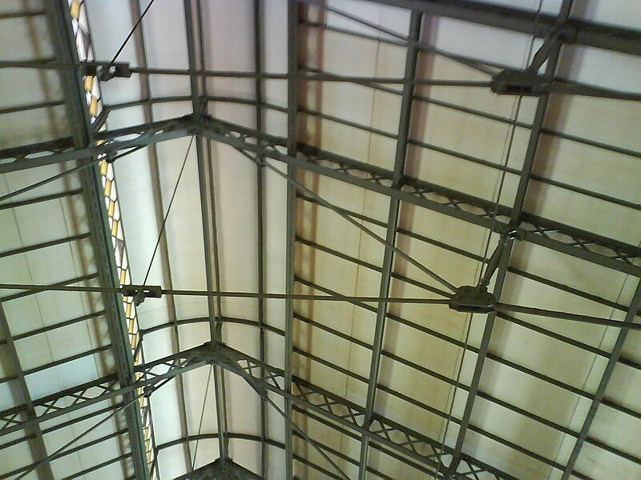
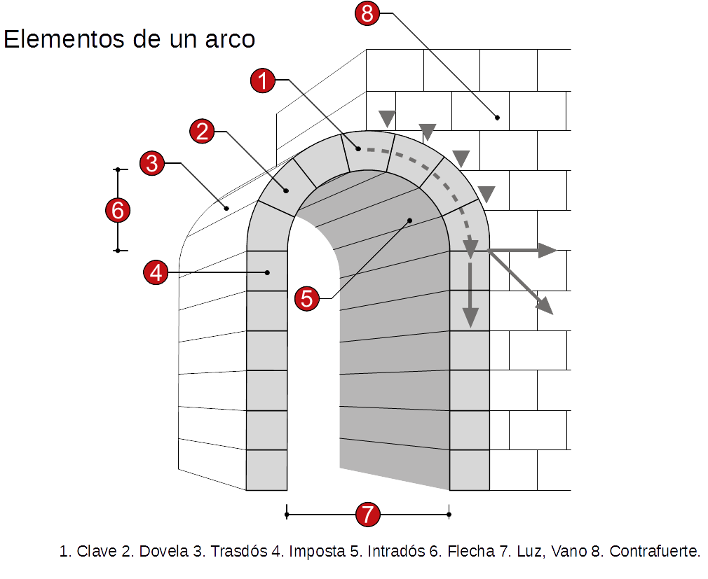
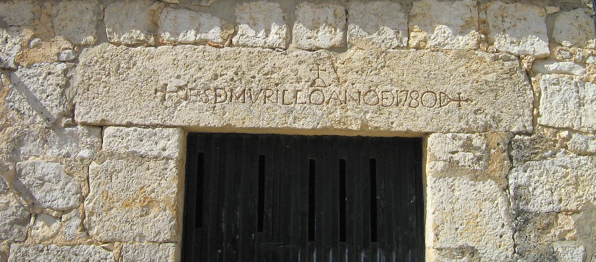
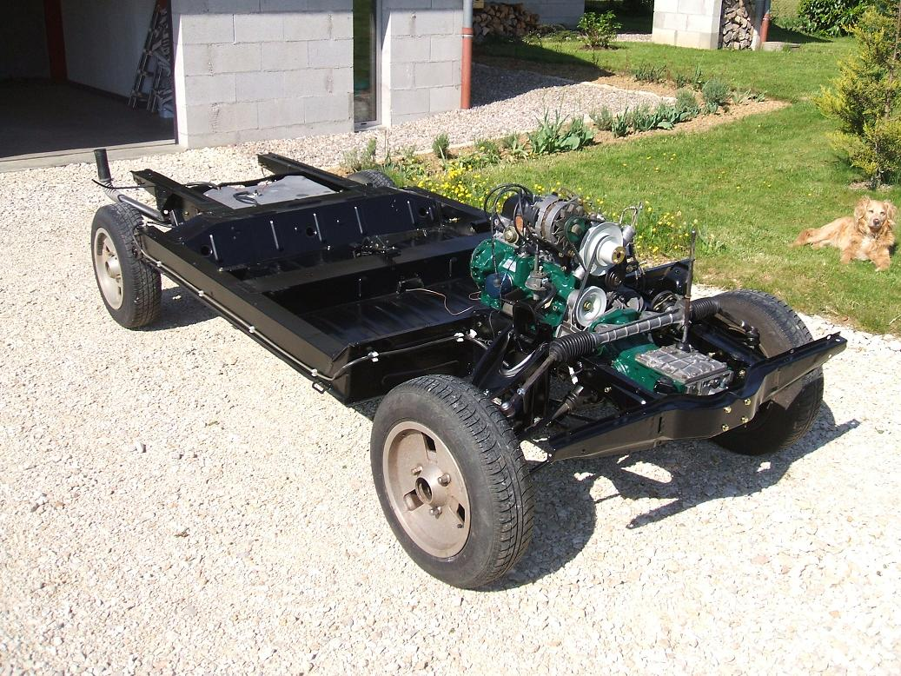
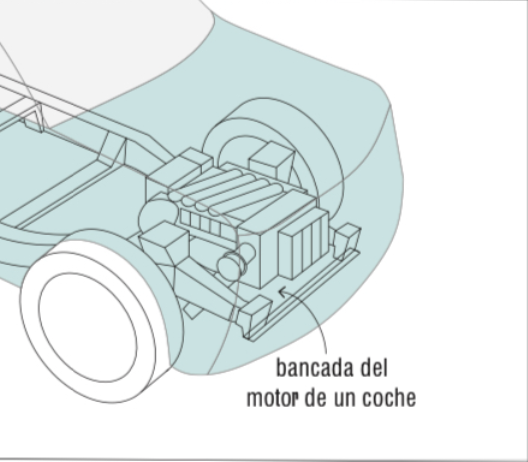

1.1 Conceptos básicos sobre las estructuras
Recordamos algunos conceptos básicos sobre las estructuras, que utilizaremos en esta unidad.
Cargas
Las fuerzas que actúan sobre las estructuras se denominan cargas o acciones.
Reacciones
Para mantenerse en equilibrio con las fuerzas que actúan sobre ellas, las estructuras, según el principio físico de acción y reacción, tienen que contraponer otras fuerzas iguales y de sentido contrario. Al conjunto de fuerzas con las que las estructuras reaccionan ante las cargas se las denomina reacciones. Las fuerzas de reacción se ejercen en los puntos por donde las estructuras están sujetas (apoyos), o bien por donde se unen los diferentes elementos de las mismas (uniones).
Esfuerzos
Al aplicar cargas sobre una estructura, aparecen unas tensiones o fuerzas internas en los elementos de la estructtura que se denominan esfuerzos. Los diferentes esfuerzos que puede soportar una estructura son los siguientes:
| Esfuerzo | Efecto y Descripción | Esquema | Ejemplos |
|---|---|---|---|
| Tracción | Estirar. Dos fuerzas opuestas tiran del elemento para alargarlo. |
 |
Cadenas de columpio, cables de grúa. |
| Compresión | Comprimir. Dos fuerzas opuestas aplastan el elemento para acortarlo. |
 | Patas de silla, columnas, pilares. |
| Flexión | Doblar. Las fuerzas tienden a curvar el elemento. |
 | Tablero de mesa, vigas de suelo, estanterías. |
| Torsión | Retorcer. Las fuerzas giran en sentidos opuestos sobre el eje. |
 |
Eje de destornillador, llave al girar, grifos. |
| Cortante | Cortar/Cizallar. Dos fuerzas paralelas y opuestas muy próximas. |
 |
Tijeras, guillotina, sujeción de cuadros. |
Condiciones a cumplir por las estructuras
A las estructuras se les exige soportar cargas, mantener la forma, proteger partes delicadas, ser ligeras y sobre todo, ser estables.
Para ello, toda estructura tiene que cumplir las siguientes condiciones:
- Estabilidad: Para que la estructura se mantenga erguida y no vuelque, su centro de gravedad tiene que estar dentro de su base y lo más cercano al suelo posible. Para conseguirlo a veces se tiene que recurrir a acciones como ampliar la base, poner tirantes o empotrar su base inferior al suelo.
- Resistencia: Tienen que ser capaces de soportar las distintas cargas sin romperse, esto depende de la forma de la estructura y del tipo y de la cantidad de material con que se ha construido.
- Rigidez: La deformación de los elementos no puede ser grande.
Aún así, toda estructura tiene que tener cierto grado de flexibilidad, ya que tienen que ser capaces de soportar las variaciones debidas a la dilatación y a la contracción de materiales, así como de absorber vibraciones y movimientos sísmicos.
1.2 Elementos resistentes en edificación
Las estructuras de edificación se componen de lo que denominamos elementos resistentes, que se pueden clasificar en:
Cimientos o cimentación
Conjunto de elementos estructurales cuya misión es transmitir las cargas de la edificación o de elementos apoyados en éste al suelo, distribuyéndolas de forma que no superen una serie de valores máximos del terreno de apoyo.
Debido a que la resistencia del suelo es, generalmente, menor que la de los pilares o muros que soportará, el área de contacto entre el suelo y la cimentación será mucho más grande que los elementos soportados (zapatas).

Soportes
Elementos verticales que soportan fundamentalmente esfuerzos de compresión, aunque también parte de cortante y, sobre todo, en los elementos más esbeltos, pandeo.
- Pilares: son habitualmente de hormigón armado, normalmente ejecutados “in situ” (encofrado). También pueden ser de acero.
- Pie derecho: soporte de madera.
- Columna: soporte de sección circular.

Muros de carga o portantes
Se trata de paredes de una edificación que poseen función estructural, es decir, aquellas que soportan otros elementos estructurales del edificio, como arcos, bóvedas, vigas o viguetas de forjados o de la cubierta.
Soportan fundamentalmente esfuerzos axiles de compresión. Cuando soportan cargas horizontales (presiones del terreno) se denominan muros de contención.

Vigas
Elemento estructural que normalmente se coloca en posición horizontal destinado a soportar esfuerzos principalmente de flexión y de cortante.
Las vigas que forman parte de un forjado se denominan viguetas. El conjunto vigas-pilares forma lo que denominan pórticos.

Cerchas
Una cercha es una celosía, una estructura reticular de barras rectas interconectadas en nodos formando triángulos planos (en celosías planas) o pirámides tridimensionales (en celosías espaciales). También se les conoce como armaduras.
El interés de este tipo de estructuras es que las barras trabajan predominantemente a compresión y tracción, presentando comparativamente flexiones pequeñas.

Forjados
Se denomina forjado al elemento estructural, horizontal o inclinado (en cubiertas), que soporta su propio peso y las sobrecargas de uso, tabiquería, dinámicas, etc. Transmite cargas verticales y horizontales, aportando rigidez.
Un tipo muy habitual es el forjado de viguetas y bovedillas, cuya construcción se detalla en el recurso adjunto.
Tirantes
Se usan para unir dos elementos de una estructura o una estructura al terreno. Su principal característica es que trabajan siempre a tracción y no soportan ningún otro esfuerzo.
Se fabrican habitualmente de acero, dada su excelente resistencia a la tracción.

Arcos, bóvedas y cúpulas
Arco: Elemento curvo que salva el espacio entre dos pilares. Trabaja predominantemente a compresión, transmitiendo cargas oblicuas (empuje) a los apoyos.
Bóveda: Elemento superficial generado por el movimiento de un arco a lo largo de un eje. Cubre espacios entre muros o pilares trabajando a compresión.
Cúpula: Elemento para cubrir un espacio circular o poligonal mediante arcos rotados respecto a un punto central. Los esfuerzos son de tracción en los paralelos y de compresión en los meridianos.


Dinteles
Es el elemento superior que permite crear vanos en los muros para conformar puertas y ventanas. La construcción que utiliza dinteles se llama adintelada.
A diferencia de los arcos, trabaja fundamentalmente a flexión, por lo que requiere materiales resistentes a la tracción.

1.3 Elementos resistentes en maquinaria
Chasis y Bastidor
El chasis es el armazón metálico que soporta los elementos de un vehículo (motor, carrocería).
El bastidor es la parte más importante del chasis. Es una estructura compuesta por largueros y travesaños donde se fijan los elementos mecánicos.
En los turismos modernos ha sido sustituido por carrocerías monocasco, integrando bastidor y carrocería en una única estructura.

Bancada
Es la estructura de una máquina herramienta, sobre la que se construye ésta.
Sus principales funciones son soportar vibraciones y movimientos, mantener la precisión en el mecanizado de piezas y alojar los mecanismos.
